最近，很多明星都在欧洲一边看奥运会，一边度假，扎克·埃夫隆（Zac Efron）也不例外，不过他却出了一点意外……
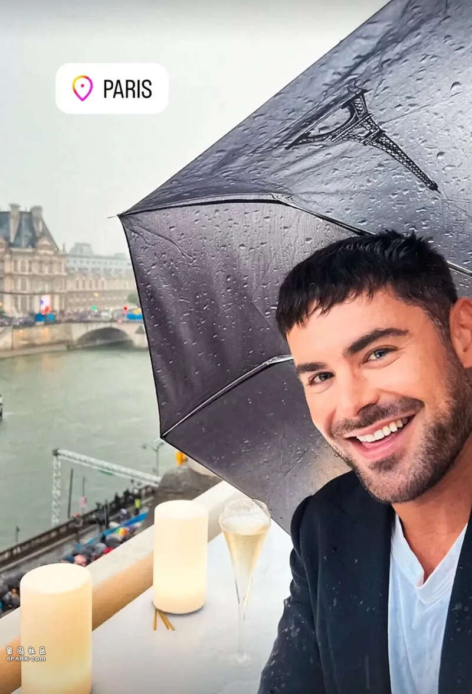
据外媒报道，当地时间本周五晚，美国知名演员扎克·埃夫隆在西班牙突发意外，被紧急送往医院。
报道称，当时扎克正在伊比沙岛度假，没想到事故发生了：两名别墅的工作人员在扎克住所的泳池中发现了他，他们立即将他从水里捞出来。随后，扎克被紧急送往当地的一家医院。
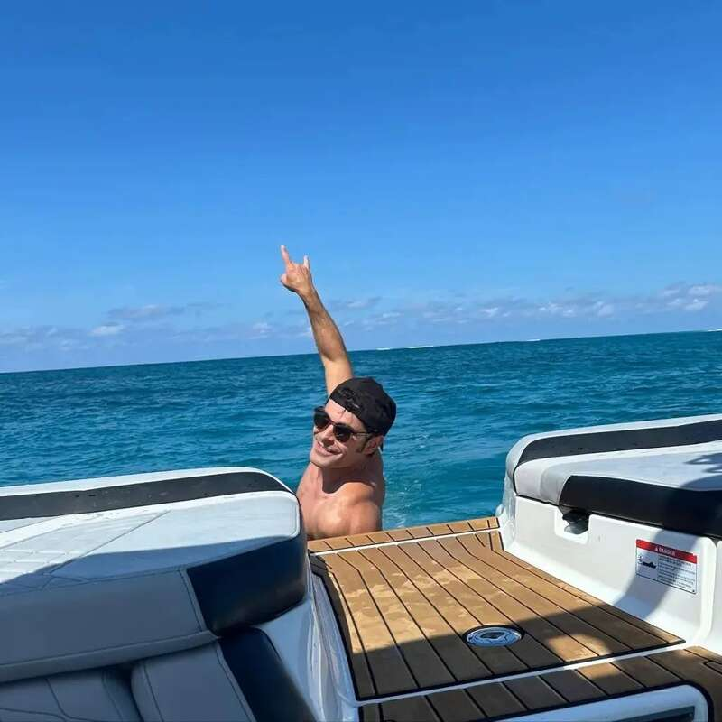
扎克在西班牙度假照片
据报道，扎克在医院住了一晚上后，已经于周六早上出院，情况良好。目前尚不清楚扎克发生了什么事故，他的工作人员只告诉媒体，扎克被送往医院是一项“预防措施”。
尽管这次意外被描述为“不严重的游泳事故”，但还是有不少网友想到了马修·派瑞（Matthew Perry）：
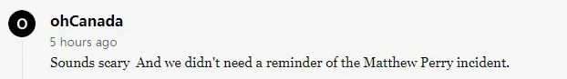
听起来很可怕，我们不需要再回忆起马修·派瑞的事情了。
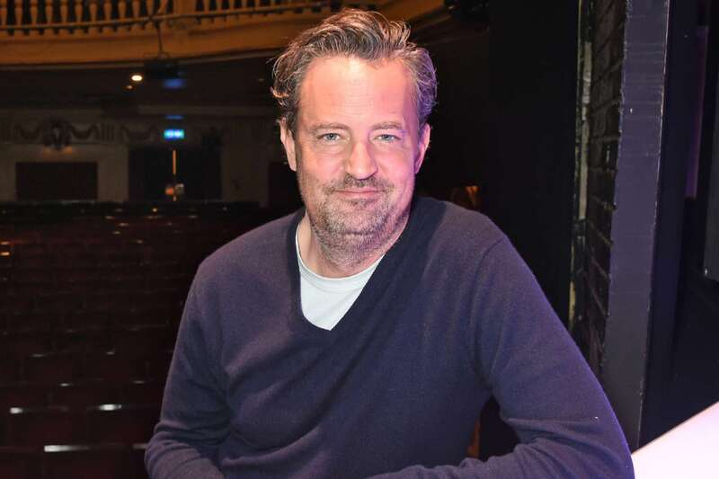
2023年10月28日，54岁的马修被助理发现死在洛杉矶家中的游泳池里。12月15日，洛杉矶法医办公室公布了马修的死因，确认他是死于“氯胺酮的急性作用”。报告称在他尸检血液样本中发现的高浓度氯胺酮，这种药物会导致心血管过度刺激和呼吸抑制。
不过，在庆幸没有发生致命事件的同时，有网友的关注点跑偏了：
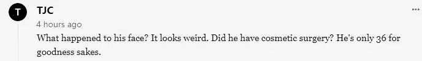
他的脸怎么了？看上去很奇怪。他做过整容手术吗？天呐他才36岁啊。
说到整容，这就要从他的成长经历讲起了——
1987年10月出生的扎克15岁时就踏入演艺圈，在客串过很多小角色后，2006年，扎克遇到了改变人生的机会：出演迪士尼电影《歌舞青春》的男主角。
随着电影的成功，扎克也爆火全球，不管是颜值还是演技，在当年都迷倒了无数少女↓
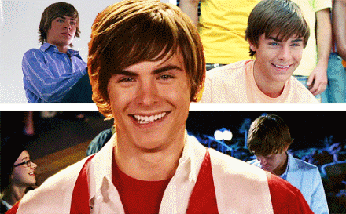
又能唱歌，又能打篮球，集齐了人们对青春男高的所有想象↓
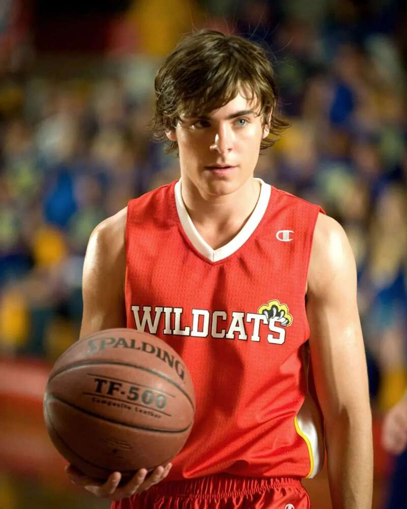
留着长刘海的扎克一时间成为了很多影迷的童年白月光↓
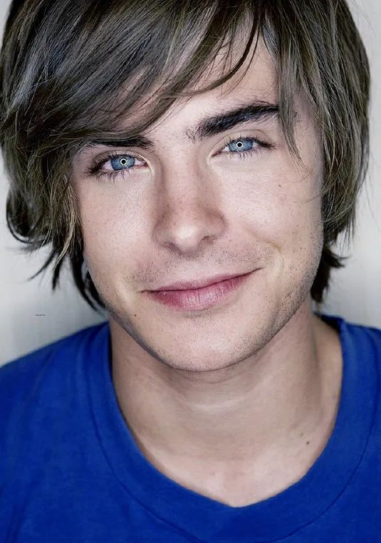
拍完三部《歌舞青春》电影后，扎克又主演了影片《重返17岁》，也成为一代人的回忆↓
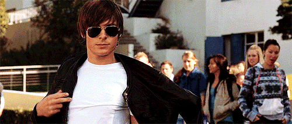
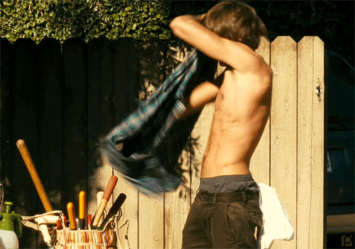
PS：在《重返17岁》中扎克饰演的“迈克”中年版是马修·派瑞出演的↓
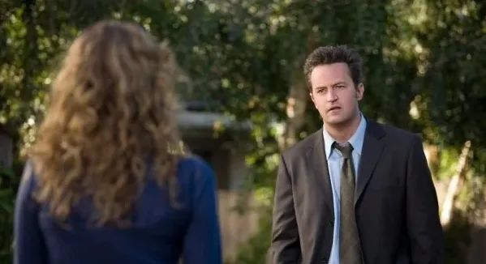
之后，扎克经历了低谷期，还因为严重的酗酒、嗑药，两度进了戒断所。就在大家以为他会继续堕落下去的时候，扎克找到了改变自己的路——健身。
于是，他跳出校园青春片，转型为肌肉男，照样迷倒了无数人↓
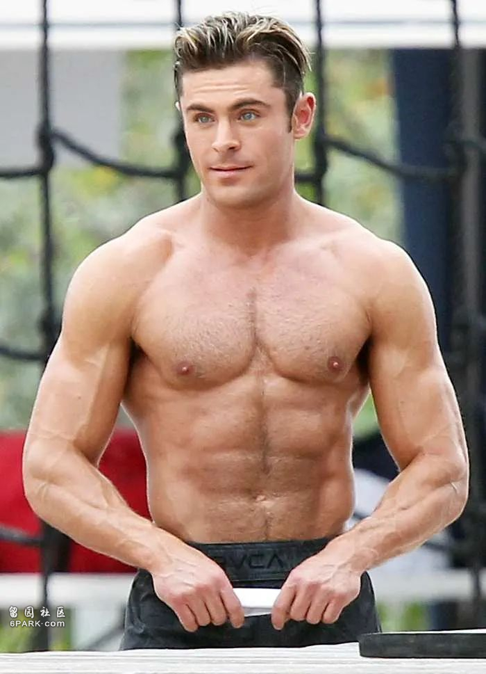
但万万没想到的是，2021年，扎克在参加一场节目的时候，人们发现记忆里的白月光怎么长变了……
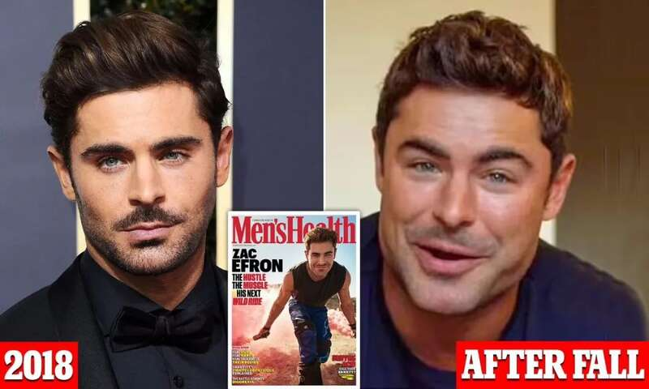
一时间，扎克整容成了当时人们都在讨论的话题……
时隔一年多后，他本人终于出面回应争议：
据扎克透露，自己一年半前穿着袜子在家里跑，结果不小心滑倒，下巴撞到了花岗岩喷泉上。他顿时失去了知觉，醒来后发现“下巴骨头挂在脸上”。
在伤愈期间，扎克的面部肌肉变得非常大，因此他找了一位理疗师帮忙。他面相的变化不是整容，而是下巴受伤后面部肌肉的自然生长。
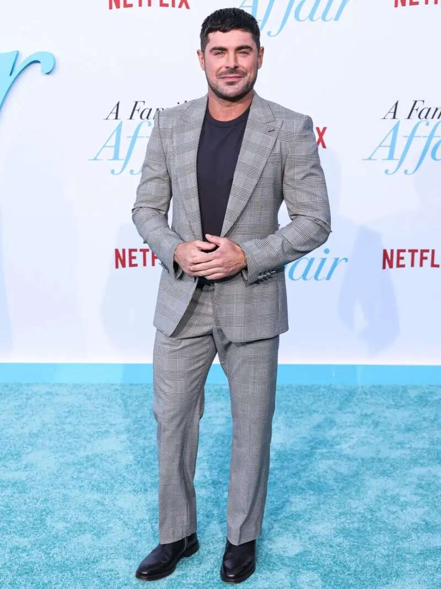
简单来说就是：整容，没有的事！
可这个说法，并没有多少人认同，甚至在这次发生了泳池事故之后，还有人希望他不要再整容了：
希望这次受伤不会导致另一次“下颌手术”。
不管怎么说，在泳池发生意外，都是一件很可怕的事，希望他以后也能多注意点吧。
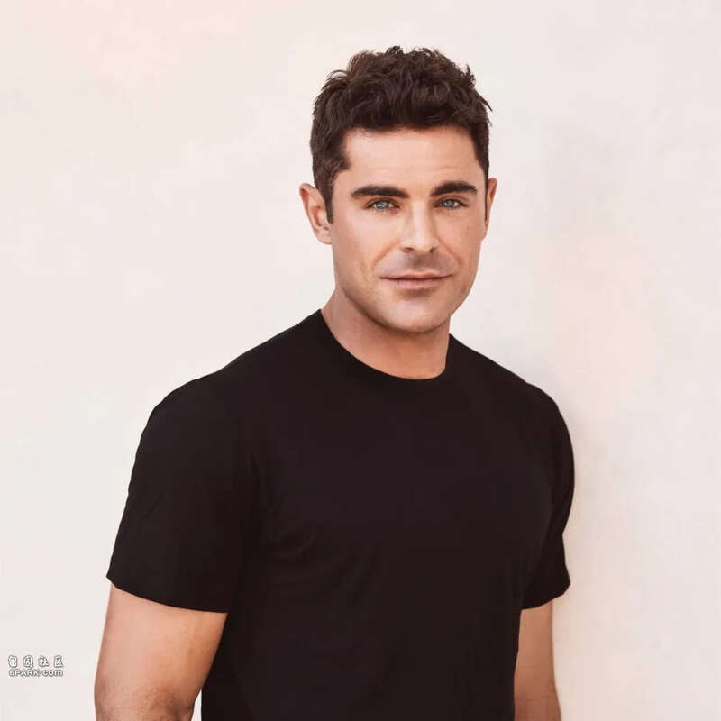
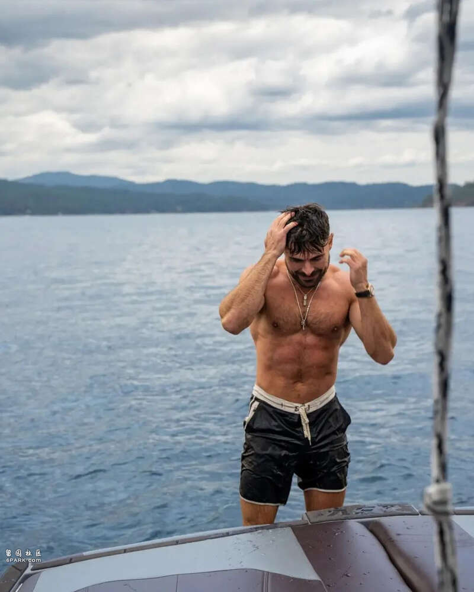